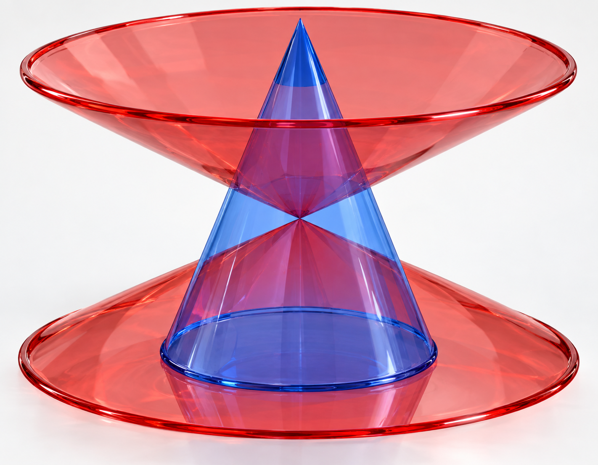

Συσχετίζοντας κωνικές τομές
Λίγα λόγια για τη συσχέτιση των κωνικών τομών.
1. Εισαγωγή
Η ομοιότητα από άποψη ορισμού και αλγεβρικής έκφρασης υπερβολών και ελλείψεων με ώθησε να ψάξω μία γεωμετρική τους συσχέτιση.
Μία προφανής ήταν η επέκταση των $x$ και $y$ στους μιγαδικούς. Τοιαύτη περιπτώσει οι εξισώσεις $\frac{x^2}{a^2}+\frac{y^2}{b^2}=1$ και $\frac{x^2}{a^2}-\frac{y^2}{b^2}=1$ είναι οι ίδιες ακριβώς επιφάνειες του $\mathbb{C}^2$, απλά η μία στραμμένη $90^o$.
Το παραπάνω, όμως, απείχε παρασάγγας από το να ικανοποιήσει την ανάγκη μου για εύρεση γεωμετρικής συσχέτισης. Περισσότερο, θα έλεγα, ενίσχυσε την πεποίθησή μου ότι συσχετίζονται και την αίσθηση του ανικανοποίητου. Έτσι στράφηκα προς τον τρισδιάστατο ορισμό τους, όπερ με οδήγησε στα παρακάτω. Λιγότερα
2. Κωνικές με αντίστροφες εκκεντρότητες
Στο παρακάτω σχήμα οι δύο κώνοι έχουν ίδιο άξονα συμμετρίας. Επομένως, αν και δεν φαίνεται, υπάρχει τμήμα του ενός μέσα στον άλλον.

Έχουμε ότι το εφαπτόμενο επίπεδο στον μπλε κώνο ορίζει μια υπερβολή στον κώκκινο, ενώ το εφαπτόμενο επίπεδο στον κόκκινο ορίζει μία έλλειψη. Θα αποδείξουμε ότι αυτές έχουν αντίστροφες εκκεντρότητες. Βλ. και το παρακάτω διαδραστικό σχήμα.
Το όλο εγχείρημα αποδεικνύεται με έναν κομψό κι εύκολο τρόπο, αν χρησιμοποιήσουμε τις σφαίρες Dandelin. Το παρακάτω διαδραστικό σχήμα είναι μια αφαιρετική παρουσίαση του «προφίλ» του συστήματος των κώνων μαζί με τις σφαίρες Dandelin τους.
Ας εστιάσουμε αρχικά στον μπλε κώνο. Τοιαύτη περιπτώσει οι κόκκινες ευθείες απεικονίζουν το επίπεδο που εφάπτεται στον κόκκινο και ορίζει στον μπλε μια έλλειψη με εστίες τα σημεία $E_1$ και $E_2$. Για την έλλειψη αυτή ισχύει ότι η μεγάλη της διάμετρος θα ισούται με $2\alpha_{\text{έλλειψη}}=Y_1 Y_2$.
Ας εστιάσουμε αρχικά στον κόκκινο κώνο. Τοιαύτη περιπτώσει οι μπλε ευθείες απεικονίζουν το επίπεδο που εφάπτεται στον μπλε και ορίζει στον κόκκινο μια υπερβολή με εστίες τα σημεία $Y_1$ και $Y_2$. Για την υπερβολή αυτή ισχύει ότι με $2\alpha_{\text{υπερβολή}}=E_1 E_2$.
Έτσι έχουμε:
3. Εφαπτόμενοι κώνοι
Μία άλλη απόπειρα συσχέτισης των κωνικών τομών μπορεί να γίνει με μια επιπλέον κατασκευή που το επίπεδο που παράγει έλλειψη σε έναν κώνο, να παράγει υπερβολή σε έναν άλλον. Το παρακάτω σχήμα είναι μία τέτοια περίπτωση.
Οι δύο κώνοι με παραπληρωματικές γωνίες κορυφής έχουν κοινή κορυφή και εφάπτονται πάνω σε μία γενέτειρά τους, όπως φαίνεται στο παραπάνω σχήμα. Ένα επίπεδο κάθετο στο επίπεδο που ορίζουν οι δύο άξονες συμμετρίας τους, τούς τέμνει (σχηματίζοντας με τον κόκκινο μια έλλειψη και με τον μπλε μια υπερβολή). Πιο συγκεκριμένα τα χαρακτηριστικά τους έχουν ως εξής:
- Ο κόκκινος κώνος έχει γωνία κορυφής $φ$
- Το τέμνον επίπεδο τέμνει την 1η γενέτειρα του κόκκινου κώνου υπό γωνία $θ$
- Η ακτίνα της ελάχιστης σφαίρας που περιβάλλει το κόκκινο αποσπώμενο τμήμα είναι $r$
Τοιαύτη περιπτώσει έχουμε ότι για την έλλειψη:
και για την υπερβολή: